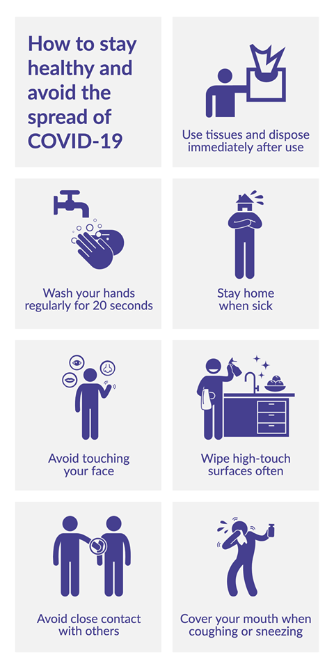

To protect others at home, someone who is sick should be precautiuos of COVID-19 as it might cause a fever, cough, and trouble breathing. Some people might have:
- As much as possible, keep away from other people and pets in your home.
- Wear a cloth face covering (or face mask, if you have one) if they must be around other people. Cloth face coverings are for use only by people older than 2 years old who are not having trouble breathing. Do not leave a child alone while they're wearing a cloth face covering. To see how to put on and remove cloth face coverings and face masks, clean them, or make your own cloth face covering, check the CDC's guide.
- If possible, stay in a bedroom and use a bathroom separate from other people in the home.
- Use separate bedding and towels and not share these with other household members.
- If the person who is sick can't wear a cloth face covering (or face mask), caregivers should wear one while they're in the same room.
- Do not allow visitors into your home. This includes children and adults.
